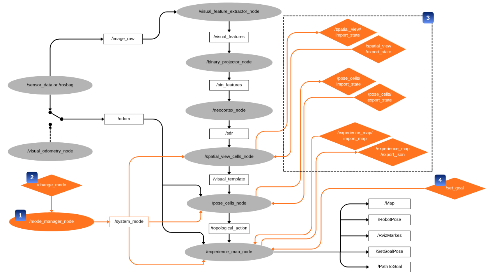
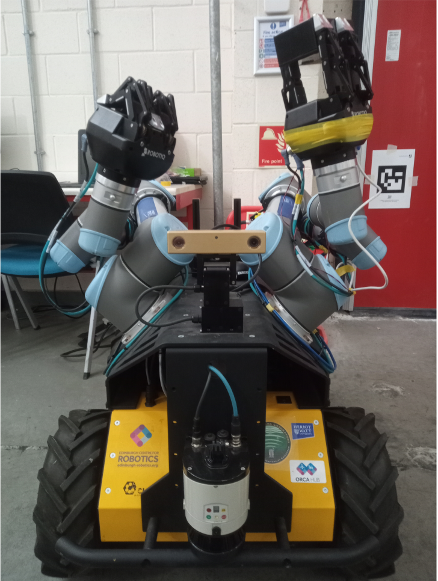
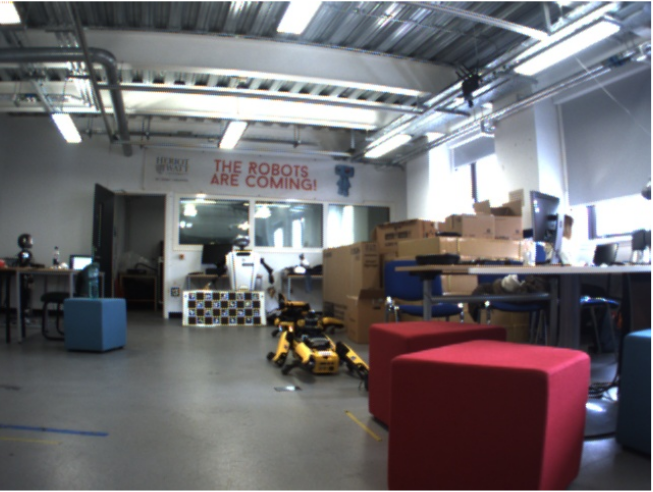
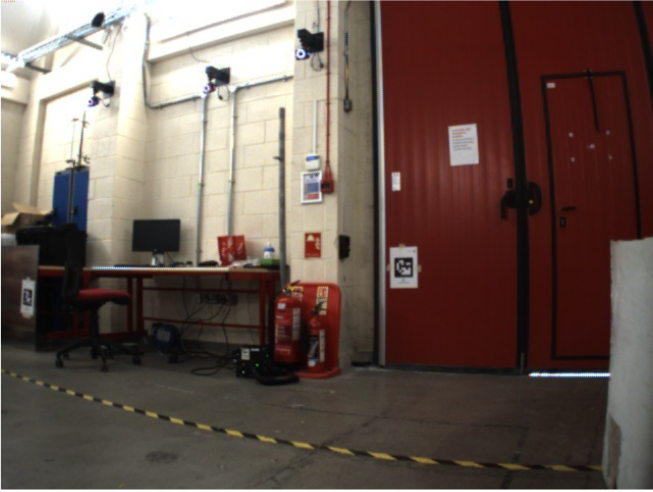
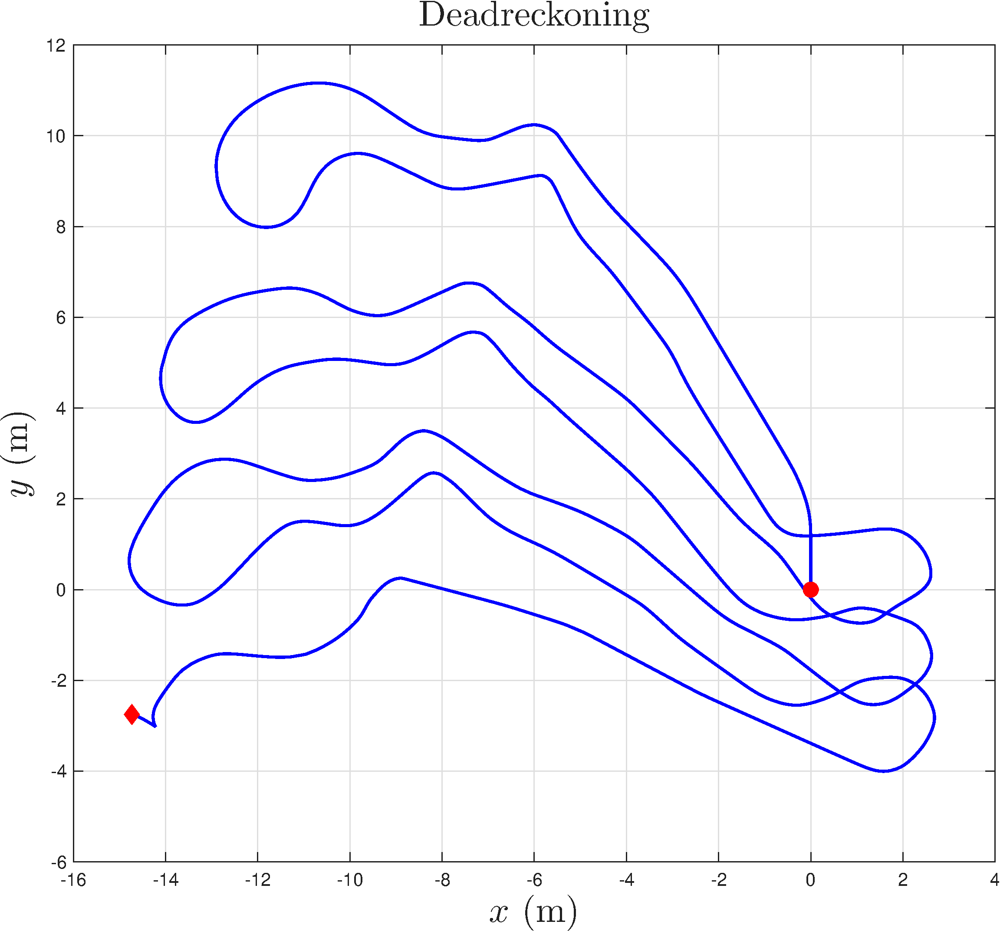
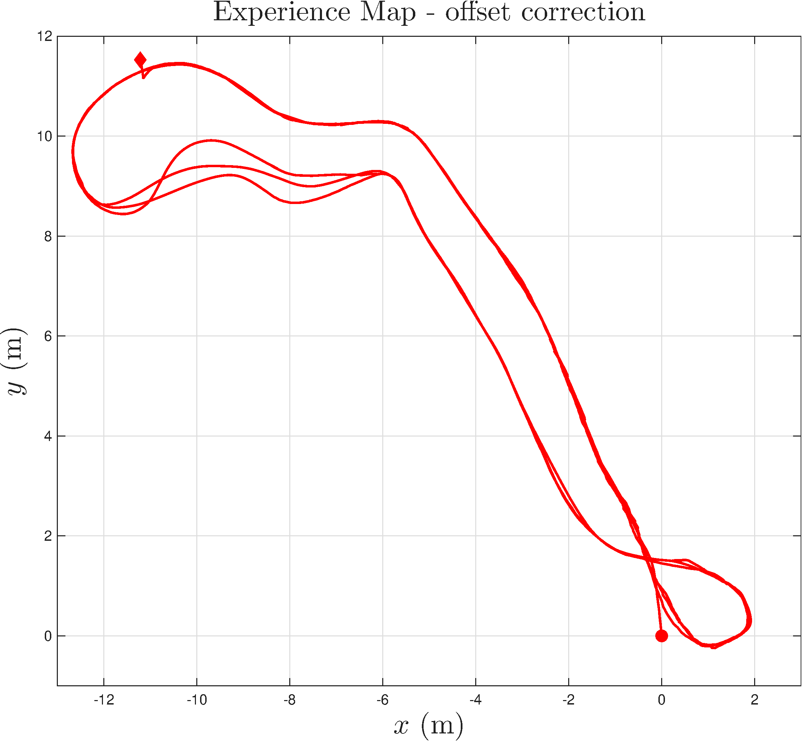

Simultaneous Localization and Mapping (SLAM) is critical for autonomous mobile robot operations. While several SLAM approaches provide robust mapping and localization, they typically rely on external navigation stacks to perform path planning and navigation. Brain-inspired SLAM systems, such as NeoSLAM, offer resilience in long-term operation but have so far been limited to mapping and localization. This paper extends NeoSLAM with a unified workflow that integrates mapping, localization, path planning, and support to navigation within a single framework. We introduce a new navigation mode, which enables a robot to localize itself within a consolidated experience map without modifying it, alongside services for exporting and importing the system state. The mathematical formulation of the proposed extensions and their ROS 2 implementation are presented. Experimental validation using the Robotarium dataset demonstrates that the full workflow operates as expected, with the map generated during mapping being successfully reused. Furthermore, the optimal path is iteratively recalculated as the robot moves relative to the target experience.
Figure ROS2 Computational Graph shows the modifications (in orange) in the system architecture. The new node /mode_manager_node (1) publishes the system mode via the /system_mode topic. A new service /change_mode (2) is also introduced to allow changing the system mode. Furthermore, a set of services (3) were introduced to provide exporting and importing states of Pose Cells, Spatial View Cells and Experience Map. Finally, the new service /set_goal (4) was introduced to allow setting the robot's goal position to the path planning algorithm.





(a) Husky A200 Robot belonging to Heriot-Watt University and (b) Robotarium frames examples from the frontal camera (PIZZINO (2024)). (c) Raw odometry (Dead Reckoning) from Husky at Robotarium experimental site.

| Parameter | Value |
|---|---|
theta_alpha | 384 |
theta_rho | 6 |
score_interval | 485 |
| Parameter | Value |
|---|---|
pc_dim_xy | 30 |
pc_dim_th | 36 |
pc_global_inhib | 0.00002 |
pc_cell_x_size | 0.1 |
pc_vt_inject_energy | 0.15 |
exp_delta_pc_threshold | 2.0 |
vt_active_decay | 1.0 |
pc_vt_restore | 0.05 |
| Parameter | Value |
|---|---|
exp_loops | 1 |
exp_initial_em_deg | 90.0 |
exp_correction | 0.5 |
| Parameter | Value |
|---|---|
use_compressed | false |
| Parameter | Value |
|---|---|
tm_column_dimensions | 2048 |
tm_cells_per_column | 32 |
tm_activation_threshold | 4 |
tm_initial_permanence | 0.55 |
tm_connected_permanence | 0.5 |
tm_min_threshold | 1 |
tm_max_new_synapse_count | 20 |
tm_permanence_increment | 0.01 |
tm_permanence_decrement | 0.01 |
tm_predicted_segment_decrement | 0.0005 |
tm_max_segments_per_cell | 100 |
tm_max_synapses_per_segment | 100 |
tm_seed | 42 |
@article{2026TowardsaUnifiedNeoSLAM,
author = {Anonymous},
title = {Towards a Unified Architecture for Mapping, Localization, Path Planning, and Navigation with NeoSLAM.},
journal = {International Symposium on System Integration},
year = {2027},
}